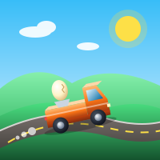

Avalanche Run
Downhill sled game — Sled down a steep frozen mountain with an avalanche rolling down right behind you. Flip off the kickers, jump the crevasses and reach the hut at the bottom.
Racing & driving Action Ultra · Zone 6 Free · no sign-up · no download
How to play Avalanche Run
- You see the mountain from the side. The sled rides downhill by itself, and the avalanche is the white wall behind you.
- Kickers throw you into the air. Hold left for a backflip or right for a front flip, then let go so the sled levels itself before it lands.
- A flat landing after a trick gives a burst of speed. Land crooked and you tumble: you lose no life, but the avalanche gains on you.
- Hold tuck to go faster on the snow. In the air, tuck grabs the sled, and a grab is a trick too.
- Kickers come in four sizes, and the bigger ones give you time for two or three flips: a double scores far more than two singles.
- Yetis stand on the run and throw snowballs. Swing your sword to cut one down or to cut a snowball out of the air, or land on a yeti's head to flatten it.
- More tricks: swing the sword in the air for a sword spin, or hold tuck and jump together off a kicker for a superman (let go before you land). The bigger the trick, the bigger and longer the burst of speed.
- Land tricks off three kickers in a row for a blizzard rush: a few seconds at top speed, with the avalanche thrown back.
- Pick up rockets for top speed, golden crystals high over the biggest kickers, and the letters S, L, E and D for a big bonus.
- Jump hops over rocks and over narrow cracks. Wide crevasses have a kicker at the edge that carries you over, as long as you keep your speed up.
- If the avalanche catches you, or you fall into a crevasse, you lose a life and start again from the flag halfway down. Reach the hut to finish the run.
Controls: ← backflip · → front flip (in the air) · ↓ tuck for speed (grab in the air; with jump, a superman) · ↑ or Space jump · X, J or click to swing the sword (touch: ↺ ↻, TUCK, JUMP and SWORD).
💡 On the later runs the avalanche is faster than a sled that only cruises. Tuck, and land tricks for the burst of speed.
Press P to pause and M to mute. Works on desktop, tablet and phone.
Levels and scoring
Avalanche Run is game 32 on TC Arcade (one of 33 free games), in Zone 6 · Inferno (Ultra difficulty). Every game is open to everyone; the zones are the recommended order, and playing all six games of a zone completes it.
- Fifteen runs down the mountain. Each one is steeper and faster, and so is the avalanche behind you.
- Runs 5 and 10 are crystal rushes: no avalanche, just kickers and crystals for 20 seconds.
- Points grow with the run: crystals, flips and tricks (a double flip is worth far more than two singles), yetis cut down or flattened, and a bonus at the hut, bigger if you never tumbled.
- Reach run 6 or 11 and you can start from there next time.
- Chain hits quickly to raise your combo multiplier.
- Make the top 20 and type a nickname to go on the public leaderboard — no account needed. Boards reset daily and weekly.
- One game a day is the Daily Challenge: the same layout for everyone, with its own board. Play today's Avalanche Run challenge.
Looking for this zone's Frost Crystal? It is hidden in Inferno Vault, the zone's Legends game.
Badges in Avalanche Run
- First Descent — Reach the hut at the bottom of run 1
- Clean Sweep — Reach a hut without a single tumble
- Outrun — Reach the hut on run 15 and outrun the mountain
- Trickster — Land a double flip off one kicker
- Yeti Hopper — Come down on a yeti from the air and flatten it
- Yeti Slayer — Cut down 3 yetis with your sword in one run
- Giant Air — Land a triple flip off one kicker
- Spell It Out — Collect the letters S, L, E and D on one run
- Deep Forest — Reach run 10
- Ten Grand — Score 10,000 in one game
Win the zone's Frost Crystal and Avalanche Run unlocks a golden character: the Golden Iceman.
More games like this

3DEggspress 3D
Racing & driving · Action
Deliver one very loose egg over the hills to the farm. Ramps, chasms, wind and oil — hard landings crack it, and three cracks is SPLAT!

Magma Escape NEW
Action · Arcade
You are made of ice, deep inside an erupting volcano. Climb out before the rising lava gets you — every burn melts you smaller. Slash the magma creatures and beat three bosses on the way up.

Inferno Vault NEW LEGENDS
Stealth · Action
The Fire King keeps the Inferno Crystal in a vault deep inside the volcano. Sneak down through its floors as the Iceman: stay out of the guards' lantern light, hide in the dark alcoves, and put the guards out with a slash from behind.

Astro Explorer NEW
Action · Space
Explore alien planets as a lone astronaut. Fight with an energy blade and a blaster, find double jump, dash and wall-cling, buy upgrades at rest beacons, and beat the guardian on every fifth planet.
Browse: Racing & driving games · Action games · all 33 games